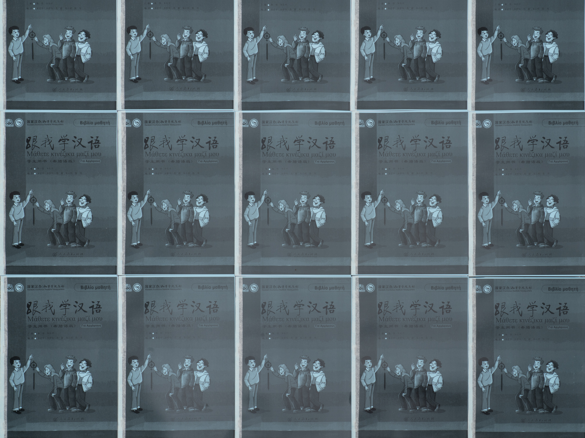

灰色市场 (Gray Market)
NeMe Arts Centre
2019
Greek-Chinese language textbooks issued by the Confucius Institute, overprinted with images of looted Cypriot artifacts in American auction catalogues archived by the Library of the Department of Antiquities (Cyprus). Counterfeited in Cyprus with funds furnished by the Fulbright U.S. Student Program, priced in CNY with a managed floating exchange rate.
